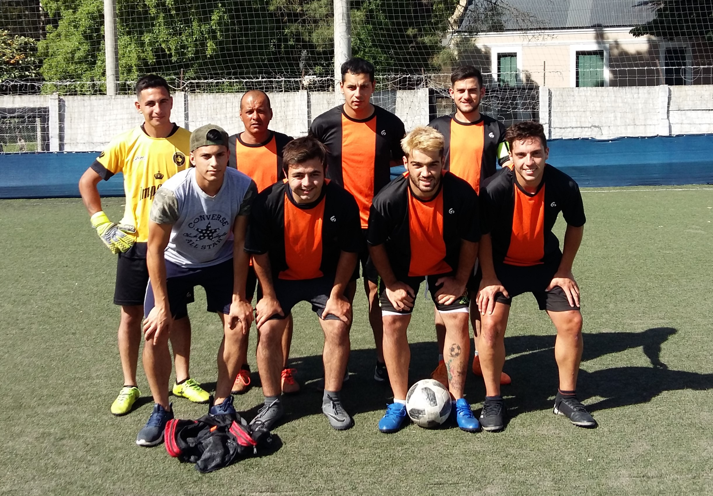

Este sitio esta dedicado al equipo de fútbol sintetico "La Nueva Sensacion". Creado por un grupo de amigos. Somos parecido a la selección Argentina, perdimos 3 finales seguidas.
Ultimo partido:
La Nueva Sensacion vs Deportivo Santani
Un segundo tiempo memorable En un día plagado de futbol en el sintético de Ferro, La nueva sensacion y Deportivo santani fueron los encargados de brindar un partidazo. La iniciativa en el comienzo la tuvo Deportivo santani, que con varias chances seguidas complicó a la defensa oponente. El defensor del arco, Seba Chavez, atajo con los justo dos buenas pelotas de Murrone y Lobos. A pesar de los ataques sufridos los muchachos de celeste, no lograba ser determinante. Esto se revertiría más tarde, pero no nos adelantemos. Como fruto de la insistencia a los 12’ una buena acción individual rompió el cero del tablero. Manuel Murrone robó y terminó la acción rematando cruzado, linda maniobra para poner las cosas 1-0. Pero el festejo duro poco, porque dos minutos más tarde Poggi y mansilla conectaron, el primero asistió cortito al segundo, que escapó de la marca y la reventó con potencia al palo (1-1). Antes de irnos al descanso tuvimos la posibilidad de otra gran atajada de Chavez, Lucas Lobos quedo mano a mano y el portero se quedo con el duelo. El complemento no nos defraudo, porque paso absolutamente de todo. En el amanecer La nueva sensacion vacunó por medio de Cristian Poggi, que aprovechó la defensa dormida y en el primer adelantamiento anotó el segundo (2 – 1). Los festejos continuaron, porque inmediatamente La nueva sensación volvió a convertir y metió una remontada memorable. Los ofensivos se conectaron, y fue Enzo Tolosa quien recibió el pase y con dos toques fulminó al arquero, estampando el 3-1. El gol entusiasmó al equipo, y al ratito nuevamente Poggi esta vez de cabeza, puso el 4 - 1. El envión siguió y a los quince llegó el doblete para los de casaca negra y rosa. Enzo Tolosa la pico por sobre la humanidad del portero y decreto el 5 a 1 final. Figura: Sebastian Chavez (La nueva sensacion). El Nº1 fue determinante, siendo el encargado de mantener el empate en el primer tiempo. En el segundo tiempo dio seguridad y no fue muy exigido. 